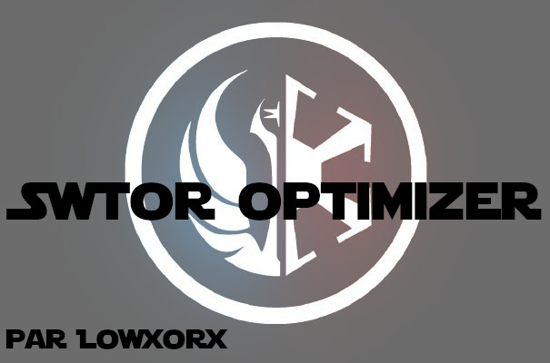

<mat-sidenav-container class="container">
  <mat-sidenav #drawer class="sidemenu-container" mode="push" (closedStart)="onClose()" [opened]="isSideMenuOpen">
    <div class="side-menu">
      <header>
        
      </header>
      <section class="menu-lists">
        <mat-nav-list color="primary" (click)="toggleMenu()">
          <mat-list-item>
            <mat-icon mat-list-icon>calculate</mat-icon>
            <a mat-line [routerLink]="['/']"> Calculer un cap</a>
          </mat-list-item>
          <mat-list-item>
            <mat-icon mat-list-icon>list_alt</mat-icon>
            <a mat-line [routerLink]="['/sets']"> Résultats</a>
          </mat-list-item>
          <mat-list-item>
            <mat-icon mat-list-icon>memory</mat-icon>
            <a mat-line [routerLink]="['/tasks']"> Liste des calculs</a>
          </mat-list-item>
        </mat-nav-list>

        <mat-nav-list color="primary" (click)="toggleMenu()" class="bottom-list">
          <mat-list-item>
            <mat-icon mat-list-icon svgIcon="github"></mat-icon>
            <a mat-line href="https://github.com/Lowxorx/SwtorOptimizer" target="_blank"> Code source</a>
          </mat-list-item>
          <mat-list-item>
            <mat-icon mat-list-icon>info</mat-icon>
            <p mat-line>v.{{ appVersion }}</p>
          </mat-list-item>
        </mat-nav-list>
      </section>
    </div>
  </mat-sidenav>

  <mat-sidenav-content class="content">
    <app-topbar [IsSideMenuOpen]="isSideMenuOpen" (PrincipalButtonClick)="toggleMenu()" (OnToggleTheme)="onToggleTheme($event)"></app-topbar>
    <div class="body">
      <ng-content></ng-content>
    </div>
  </mat-sidenav-content>
</mat-sidenav-container>
